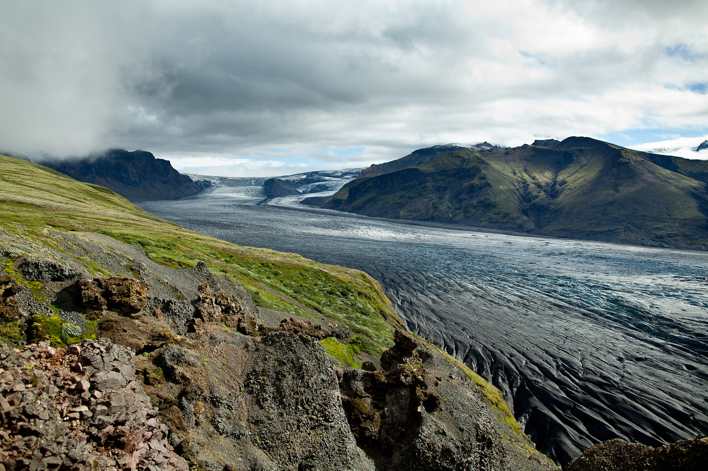
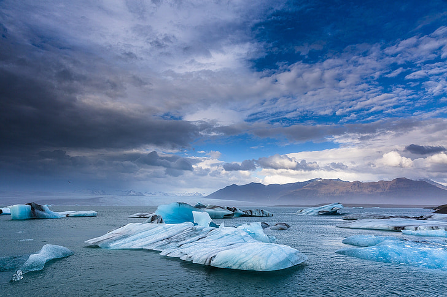

A Islândia é repleta de cenários naturais impressionantes, muitos dos quais parecem saídos de outro mundo. Abaixo, estão três das mais famosas e espetaculares atrações naturais do país:
1. Parque Nacional Þingvellir

Localizado no sudoeste da Islândia, o Parque Nacional Þingvellir é um local de imensa importância histórica e geológica.
2. Geleira Vatnajökull e o Parque Nacional Vatnajökull
A geleira Vatnajökull, a maior da Europa em volume, cobre cerca de 8% da Islândia e é uma das principais atrações naturais do país. Dentro do Parque Nacional Vatnajökull, a geleira abriga algumas das formações de gelo mais impressionantes do mundo, incluindo cavernas de gelo que se formam no inverno.
3. Laguna Glacial Jökulsárlón
Jökulsárlón é uma das paisagens mais icônicas da Islândia. Localizada no sudeste do país, essa laguna glacial é alimentada pelo derretimento da geleira Vatnajökull, resultando em uma vasta área de água onde imensos blocos de gelo flutuam suavemente em direção ao Oceano Atlântico.
Esses três destinos oferecem uma visão privilegiada das maravilhas naturais da Islândia, combinando sua geologia única, sua beleza surreal e a interação harmoniosa entre forças vulcânicas e glaciares.
Galeria de Imagens